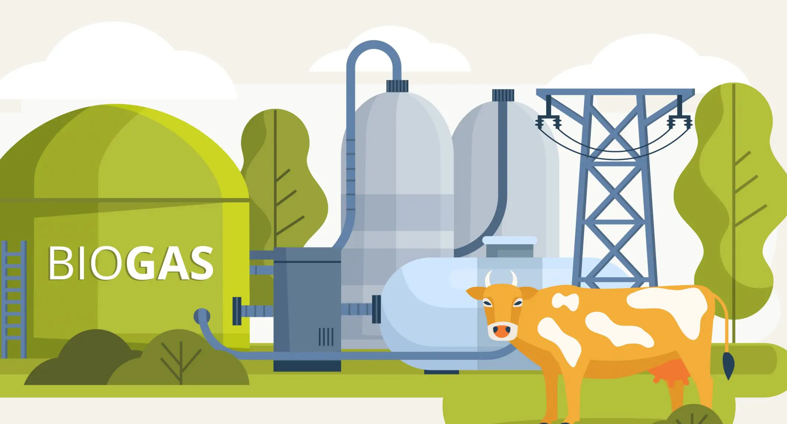

Vamos falar sobre o biogás, esse site tem o intuito de consciêntizar
os produtores rurais de que a energia gerada atráves desse método
é a melhor escolha pra sua fazenda, é sustentável e econômico.

O que é o biogás no agronegócio?
O biogás é uma fonte de energia renovável produzida a partir
da decomposição de resíduos orgânicos, como esterco de animais, restos de culturas
agrícolas e resíduos agroindustriais. No agronegócio, essa tecnologia representa
uma alternativa sustentável para o aproveitamento de materiais
que antes eram descartados, transformando-os em energia e fertilizantes naturais.
Benefícios
Aproveitamento eficiente dos resíduos orgânicos
Redução dos custos operacionais da propriedade rural.
Produção de biofertilizante de alta qualidade.
Mitigação das Mudanças Climáticas
O aproveitamento do biogás no agronegócio representa uma alternativa
sustentável e eficiente.Dessa forma, essa tecnologia fortalece o desenvolvimento
de uma agricultura mais moderna e sustentável.